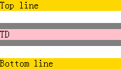
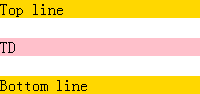

RB1003: Firefox 中 'display:table' 的元素的外边距不会与包含块的外边距折叠
标准参考
W3C CSS2.1规范第17.4节 详细描述了表格的可视化模型，此处的表格为CSS意义上的 '表格 '，它可以表现为一个块级元素（'display:table'）或是一个行内元素（'display:inline-table'）。
无论上述的哪种情况，表格框（table box）生成了一个匿名框（anonymous box），此匿名框包含了表格框本身以及所有的标题框（caption box，在文档顺序中）。标题框为块级框，包含了其 'content' 、 'padding' 、 'margin' 以及 'border' 区域，并且作为普通的块在匿名框中被渲染。标题框与表格框放置的位置关系由 'caption-side' 特性决定。
匿名框是块级还是行内的框由表格的 'display' 特性决定，匿名框创建了新的 block formatting context （具体参见：不能在 IE6 、IE7 及 IE8(Q) 中触发 hasLayout 并在其他浏览器中创建 Block Formatting Context 的元素的表现会有差异 ）。表格框（不是匿名框）为 'inline-table' 时将用来做垂直方向的基线对齐。匿名框的宽度为其内表格框的边框边宽度，其百分比宽度及高度则参照匿名框的包含块，而不是匿名框自身。
表格框上 'position' 、 'float' 、 'margin-*' 、 'top' 、 'right' 、 'bottom' 、 'left' 特性的计算后的值会作用于匿名框上，而表格框则使用上述特性的初始值。
下图展示了包含了标题框的表格，标题的上边距会与表格的上边距发生塌陷：
问题描述
Firefox 中 'display:table '的元素的外边距不会与包含块的外边距折叠
造成的影响
严重的情况下会破坏整体布局
受影响的浏览器
| Firefox |
|---|
问题分析
对于此问题，我们通过以下的测试用例来说明。
分析以下代码：
<div style="background:gold;">Top line</div> <div style="background:gray;
width:300px; margin:20px 0;"> <table cellpadding="0"
cellspacing="0" style="background:pink; width:200px; margin:10px
0;"> <tr> <td>TD</td> </tr> </table> </div> <div
style="background:gold;">Bottom line</div>
上述代码中，两个金色背景的DIV元素之间夹有一个DIV容器，容器有上下边距margin:20px 0，其子元素TABLE有上下边距margin:10px 0。
在各浏览器中效果如下：
| IE6 IE7 IE8(Q) Firefox | IE8(S) Chrome Safari Opera |
|---|---|
|  |  |
- 在IE6 IE7 IE8(Q) Firefox 中， TABLE 元素的上下 'margin' 没有与其容器的上下 'margin' 发生 "margin collapse" ，而IE中是由于TABLE元素的 'hasLayout' 属性为 'true' ，在IE中 'hasLayout' 阻止了"margin collapse"；
- IE8(S) Chrome Safari Opera 中，TABLE 元素的上下 'margin' 与其容器的上下 'margin' 发生了"margin collapse"，是符合标准正确的表现。
表格元素相对于其他块级元素存在一个特殊的“匿名框”，为表格元素设置的 'margin' 特性实际上作用于匿名框，而 Firefox 中，匿名框上的 'margin' 特性没有与其父容器的 'margin' 特性发生 "margin collapse" 。
以上测试结果对与 'display:inline-table' 时也有效。
解决方案
由于 IE6 IE7 IE8(Q) Firefox 元素的 'margin' 处理与 W3C 规范中的差异，若我们需要利用 "margin collapse" 达到某些布局效果时，在这几种浏览器中可能会由于没有发生 "margin collapse" 而出现 "额外边距" 的情况。所以应避免为表格设置上下边距，以及导致其 "margin collapse" 的发生，可以使用为表格的父元素使用 'padding' 代替表格元素的 'margin' 。
参见
知识库
相关问题
测试环境
| 操作系统版本: | Windows 7 Ultimate build 7600 |
|---|---|
| 浏览器版本: |
IE6
IE7 IE8 Firefox 3.6 Chrome 4.0.302.3 dev Safari 4.0.4 Opera 10.60 |
| 测试页面: | RB1003.html |
| 本文更新时间: | 2010-08-09 |
关键字
TABLE margin collapse model 表格 塌陷